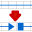

caDNAno Tool Button Reference
| icon | name | function |
|---|---|---|
| Edit Tool | Click a helix in the Slice Panel to add scaffold at the current position of the Slice Bar. Shift+Click an existing helix to add staple sequence at the current position of the Slice Bar. |
|
| Zoom Tool | Click to zoom in. Shift+Click to zoom out. |
|
| Move Tool | Click+Drag to reposition the Slice helices. | |
| First-Slice Button | Click button to move Slice Bar to left-most position. | |
| Last-Slice Button | Click button to move Slice Bar to right-most position. | |
| Renumber Button | Click button to renumber helices according to their current order in the Path panel. | |
| icon | name | function |
|---|---|---|
| Edit Tool |
Click on a crossover to add or remove. Click+Drag on a breakpoint to reposition. Shift+Click on one of two adjacent breakpoints to ligate a nick. Alt+Click on a breakpoint to move breakpoint to its boundary. Alt+Shift+Click on Slice Bar to move all breakpoints to their respective boundaries. |
|
| Zoom Tool | Click to zoom in. Shift+Click to zoom out. |
|
| Move Tool | Click and Drag to reposition the Path canvas. Tip: use arrow keys ← ↑ ↓ → to avoid switching back and forth to this tool. |
|
|  | Break Tool | Click to install a 3' nick in scaffold or staple. |
| Erase Tool | Click to remove continuous stretch of scaffold or staple (up to any breakpoint or crossover). | |
| Force Crossover Tool | Click to once to select start position, then click again to select end position. Confirm in dialog box to install a non-standard crossover. | |
| Loop Tool |
Click on a scaffold strand to install a loop, which causes extra scaffold (and optionally staple) bases to be included at a that position. Click on a staple strand to install a specific sequence. Double-Click with Edit Tool to remove a loop. |
|
| Skip Tool | Click on a scaffold position to install a "skip", which causes scaffold and staple sequence to not be installed at the specific position. Double-Click with Edit Tool to remove a skip. |
|
| Paint Tool | Click on a staple to set to selected color. Use color picker to select specific a color. Use keyboard shortcut "p" to cycle through colors. |
|
| AutoStaple Button | Click to install a default set of staples. It is best to complete the scaffold design before using the AutoStaple button. Note: Staples can be installed manually using the Slice Panel Edit Tool. |
|
| Add Sequence Tool | Click on a scaffold 5' breakpoint to apply a scaffold sequence to a design. Sequences are not currently stored, so this tool must be used whenever an existing design is loaded. M13 scaffold hairpins are highlighted when sequence is applied. |
|
| Export SVG Button | Click to export an SVG diagram of the path panel. Sequences will be included if previously applied with the Add Sequence Tool. | |
| icon | name | function |
|---|---|---|
| Zoom Button | Click to zoom in. Shift+Click to zoom out. |
|
| Move Tool | Click+Drag to reposition the 3D model. Unselect the tool to return to Examine mode. |
|
| X3D Export Button | Click to export an X3D cylinder model of the scaffold arrangement. | |
Notes
- Click always refers to a Left-Mouse-Button click.
- Buttons are clicked for use, while Tools must be selected before use in their appropriate panel.